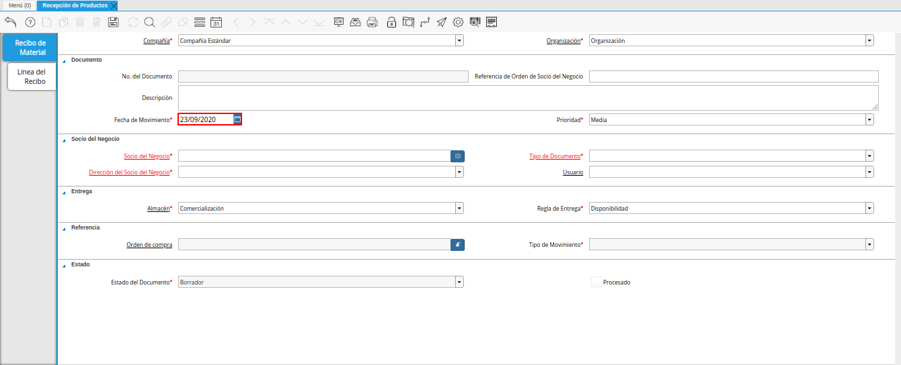
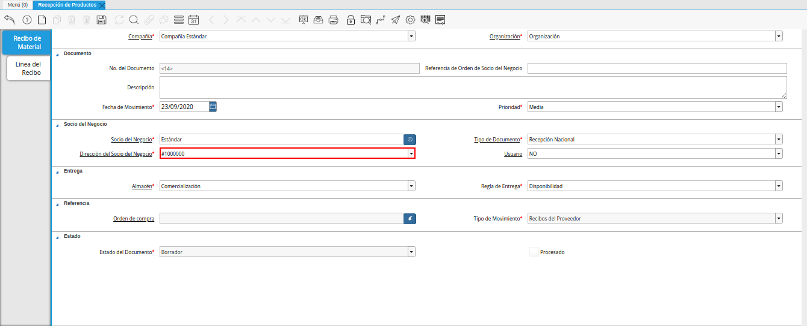

5.2.2. Registro de Recepción Desde Factura¶
Ubique en el menú de ADempiere la carpeta “Gestión de Compras”, luego seleccione la ventana “Recepción de Productos”, adjunto imagen para referencia.

Imagen 1. Menú de ADempiere
Podrá visualizar la ventana “Recepción de Productos”, con todos los registros de recepciones en ADempiere.

Imagen 2. Ventana Recepción de Productos
Seleccione la opción “Registro Nuevo” en la barra de herramientas de ADempiere, para crear un documento nuevo.

Imagen 3. Registro Nuevo
Seleccione en el campo “Organización”, la organización para la cual se esta realizando el documento de recepción de productos, el valor en el mismo debe ser diferente del símbolo (*).

Imagen 4. Campo Organización
En el campo “No. de Documento”, no es necesario ingresarlo en forma manual, al momento de realizar un registro, ADempiere genera un número de secuencia automáticamente para el documento, al seleccionar la opción guardar del nuevo registro de la recepción de productos.

Imagen 5. Campo No. del Documento
Introduzca en el campo “Referencia de Orden de Socio del Negocio”, la referencia de orden del socio del negocio.

Imagen 6. Campo Referencia de Orden de Socio del Negocio
En el campo “Descripción”, introduzca una breve descripción referente a la recepción de productos que se está realizando, este campo es opcional.

Imagen 7. Campo Descripción
Seleccione en el campo “Fecha de Movimiento”, la fecha en la que se recepcionaron los productos.

Imagem 8. Campo Fecha de Movimiento
Seleccione la prioridad de la recepción en el campo “Prioridad”, este campo indica la urgencia de los productos incluidos en el documento, sin embargo, el documento trae predeterminado la opción “Media”.

Imagen 9. Campo Prioridad
Seleccione en el campo “Socio del Negocio”, el socio del negocio proveedor del cual se estan recibiendo los productos.

Imagen 10. Campo Socio del Negocio
Seleccione el tipo de documento a generar en el campo “Tipo de Documento”, la selección de este define el comportamiento del documento que se esta elaborando, dicho comportamiento se encuentra explicado en el documento “Tipo de Documento” elaborado por ERPyA.

Imagen 11. Campo Tipo de Documento
Podrá visualizar en el campo “Dirección del Socio del Negocio”, la dirección de localización del socio del negocio seleccionado.

Imagen 12. Campo Dirección del Socio del Negocio
Podrá visualizar en el campo “Usuario”, el usuario del socio del negocio seleccionado.

Imagen 13. Campo Usuario
Seleccione en el campo “Almacén”, el almacén en que cual se guardarán los productos que se estan recibiendo.

Imagen 14. Campo Almacén
Seleccione en el campo “Regla de Entrega”, la regla de entrega utilizada para la recepción de los productos.

Imagen 15. Campo Regla de Entrega
Note
Recuerde guardar el registro de los campos de la ventana antes de cambiar a otra pestaña, seleccionando el icono “Guardar Cambios” ubicado en la barra de herramientas de ADempiere.
Seleccione la opción “Crear Desde Pedido/RMA”, generada al seleccionar el icono “Proceso”, ubicado en la barra de herramientas de ADempiere.

Imagen 16. Opción Crear Desde Pedido/RMA
Podrá visualizar la ventana “Crear Recibo de Orden de Compra o RMA”, con diferentes campos que permiten al usuario filtrar la búsqueda de la información en base a lo requerido por el mismo.

Imagen 17. Ventana Crear Recibo de Orden de Compra o RMA
Seleccione en el campo “Crear Desde Tipo”, la opción “Factura” para crear la recepción desde la factura.

Imagen 18. Campo Crear Desde Tipo
Seleccione en el campo “Factura”, la factura desde la cual se va a generar el documento de recepción.

Imagen 19. Campo Factura
Seleccione la opción “Comenzar Búsqueda”, para filtrar la información en base a lo seleccionado en los campos anteriormente explicados.

Imagen 20. Opción Comenzar Búsqueda
Seleccione la factura desde la cual requiere generar el documento de recepción.

Imagen 21. Selección de la Orden de Compra
Seleccione en el campo “Recibo todo en la Ubicación Entrante”, la ubicación en la cual se almacenará lo recepcionado. Luego seleccione la opción “OK” para cargar a la ventana “Recepción de Productos” la información de la factura seleccionada.

Imagen 22. Campo Recibo todo en la Ubicación Entrante
Seleccione el icono “Refrescar”, para refrescar la ventana y cargar a la misma, la información de la factura seleccionada.

Imagen 23. Icono Refrescar
En el campo “Orden de Compra”, se muestra la orden de compra relacionada a recepción de los productos. Para este ejemplo, como es creada la recepción desde la factura y esta no posee orden de compra asociada, el campo queda sin ningún valor.

Imagen 24. Campo Orden de Compra
Podrá visualizar en el campo “Tipo de Movimiento”, el método de movimiento de inventario correspondiente a la recepción de los productos.

Imagen 25. Campo Tipo de Movimiento
Para revisar y confirmar la información cargada desde la factura, seleccione la pestaña “Línea del Recibo”.

Imagen 26. Pestaña Línea del Recibo
Regrese a la pestaña principal “Recibo de Material” y seleccione la opción “Procesar Orden”, desplegada por el icono “Proceso”, ubicado en la barra de herramientas de ADempiere.

Imagen 27. Opción Procesar Recepción en el Icono Proceso
Seleccione la acción “Completar” y la opción “OK”, para completar el documento “Recepción de Productos”.

Imagen 28. Opción Completar